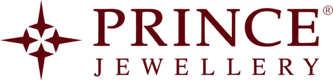
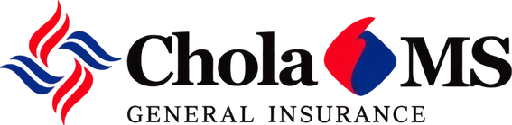
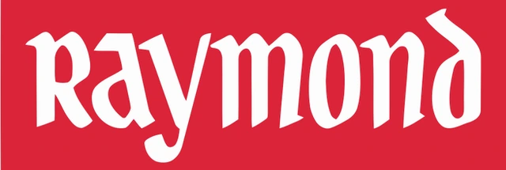
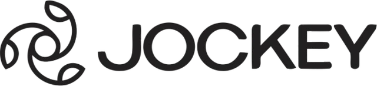
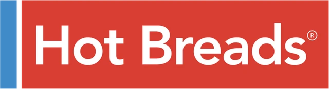
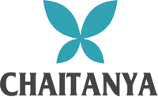
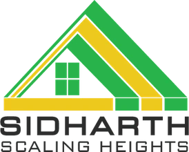
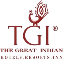

Prince JewelleryJewellery & Retail
A Chennai advertising agency trusted for 18+ years — crafting
Campaigns That WinAward-Worthy BrandsPAN India StrategyStories That StickCampaigns That Win
for brands that refuse to be forgotten.
18 years · 1000+ campaigns · Measurable results across every media channel in India.
Since 2008 — from Chennai to PAN India. We don't just plan media. We engineer movements.
Prosign Communications was founded on one belief: that a brand from South India can compete with any brand in India — if it has the right strategy behind it. Since 2008, we've been proving it. One campaign at a time.
From a single hoarding on Anna Salai to full PAN India media campaigns spanning print, TV, radio, OOH and digital — we've been the silent force behind some of the region's most recognisable brand stories.
End-to-end advertising solutions built to move markets — from strategy and creative conception through to flawless execution and measurable results.
Every number here is a campaign delivered, a brand grown, and a client who trusted us with their most important marketing decisions.
See the workWe don't compare ourselves to other agencies. We compare ourselves to your last campaign — and we make sure the next one is bigger. INS-accredited, Chennai-rooted, PAN India executed.
From the first conversation to the final report, one Prosign team owns every stage of your campaign.
18+ years of partnerships across jewellery, insurance, education, real estate, hospitality and beyond








INS-accredited access to India's leading newspapers, TV channels, radio stations and digital platforms — planned, negotiated and released by one team.
Our media network
37 outlets9 languages4 media types
Spin it, filter by medium or language, and open any outlet for details.
Prosign planned and executed our Akshaya Tritiya 2024 campaign across 8 states in under 12 days — print, OOH, radio and digital, all synchronised flawlessly. The footfall numbers exceeded every target we had set. They don't just plan media; they understand your brand goals deeply and deliver without excuses.
When we were launching our PAN India insurance campaign, we needed an agency that understood both national scale and regional nuance. Prosign delivered exactly that — sharp media negotiation and flawless coordination across 22 cities simultaneously. We've continued to partner with them.
Over 17 years with top national agencies before founding Prosign in 2008. Expert in time-bound topical campaigns, Rebranding, Product Launches, and PR. Core specialisation in Planning, Buying and Implementing campaigns that move markets — from regional launches to full PAN India media blitzes.
Tell us what you're building. We'll tell you how to make all of India notice it.
We respond to every brief within 24 hours.
Thank you — we've received your campaign brief and will review it carefully. Expect a response from our team within 24 hours. Watch your inbox.